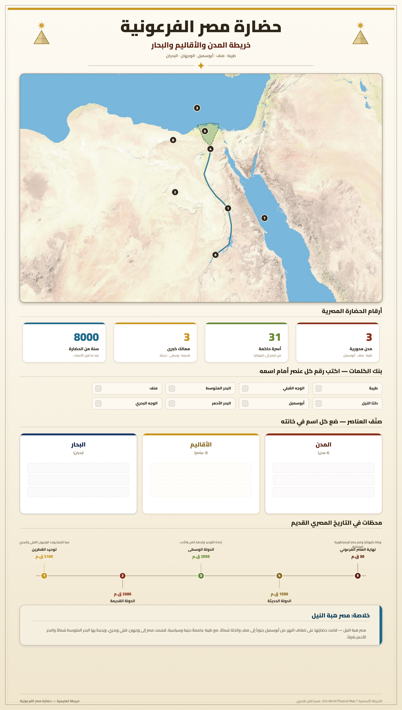

📖 التاريخ (20 نقطة)
📌 القسم الأول: (6 نقاط)
1) سجّل هذه الأحداث في المكان المناسب على السلم الزمني: (3 ن)
2) أكمل الفراغات بما يناسب على الخريطة: (3 ن)
خريطة حضارة مصر الفرعونية

📜 القسم الثاني: (12 نقطة) استغلال وثيقة
📄 الوثيقة:
إن سكان ما بين النهرين كتبوا على الطين الطري ونقشوا عليه ما يريدون نقشه بسنّ آلة حادة. وكانوا في ذلك جدّ مهرة، فاستطاع كتّابهم بفضل هذه المادة اللينة أن يحتفظوا بالسجلات، ويدونوا العقود، ويكتبوا الوثائق الرسمية، ويسجلوا الممتلكات والأحكام القضائية والبيوع. وكان الكاتب إذا أتمّ ما يريد كتابته جفف اللوح الطيني في الدار أو عرضه لحرارة الشمس فجعله بذلك محفوظاً أبقى على الدهر من الورق.
— وِل ديورانت: قصة الحضارة، ج 1، ص 34 (وارد في الكتاب المدرسي ص 14)
أجب على الأسئلة بالاعتماد على الوثيقة ومستعيناً بما درسته:
1) قدّم نوع الوثيقة وموضوعها واختر العنوان المناسب: (3 ن)
- نوع الوثيقة:
- موضوعها:
- العنوان المناسب:
☐ ظهور الكتابة ☐ الأبجدية الإغريقية ☐ الكتابة المسمارية
2) أكمل الفراغات بما يناسب حول ظهور الكتابات في العالم القديم: (3 ن)
- • ظهرت الكتابة المسمارية في بلاد الرافدين حوالي ق.م.
- • ظهرت الكتابة الهيروغليفية في مصر حوالي ق.م.
- • ظهرت الأبجدية في فينيقيا حوالي ق.م.
3) أكمل الجدول والاستنتاج: (6 ن)
جدول أغراض استخدام الكتابة قديماً وأدلة من الوثيقة:
| الغرض | الدليل من الوثيقة |
|---|---|
| إداري | |
| اقتصادي | |
| ............... | "ويسجلوا الممتلكات" |
| ............... | "ويسجلوا ... الأحكام القضائية" |
الاستنتاج: استنتج تعدد وأن مؤلف الوثيقة مكّنه من معرفة ذلك بفضل فك رموز الكتابة المسمارية من قبل سنة .